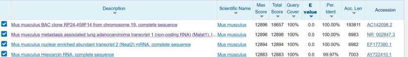
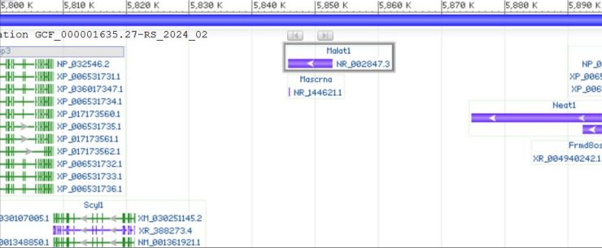

Telling the story of a DNA sequence
The objective of this group project was to use a scientific approach to find pieces of informations about an unknown DNA sequence. The goal was to suggest ideas about where it comes from and what role it plays in its original organism by using bioinformatics tools. Bibliographic research was discouraged to push us to find answers on our own.
The first step was to identify the DNA sequence by submitting it against the NCBI database with the BLAST algorithm. This told us that it was an RNA sequence called MALAT1, coming from a mouse (Mus musculus). It appears to be a non-coding sequence, meaning it does not produce any proteins.
Looking at tissues expression data showed that it is found mostly in the prostate and the thyroid. Description texts for the sequence showed that there are different versions of MALAT1, including one that produces a short 58-nucleotide sequence called Mascrna, which is close to a transfer RNA. Finally, looking through genome browsers showed that this gene also exists in humans, in three different forms. It seems to be involved in cell growth. There is also a link between the overexpression of MALAT1 and the presence of cancer and tumors.
The results of this project were presented in an oral presentation.
Skills learned:
- Using and setting up the BLAST alignment tool
- Using genome browsers
- Organizing and carrying out a scientific approach
- Deepening my knowledge in basic biology
- Giving an oral presentation
Illustrations

BLASTn results

Sequence visualization with the tool Genome Viewer from the NCBI